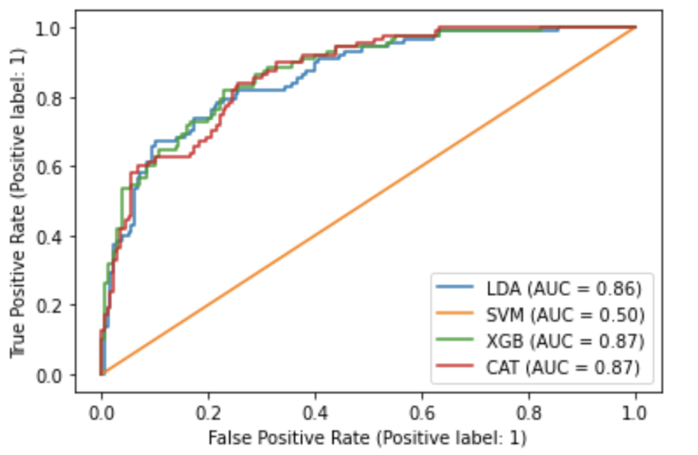

Technical Core: Data Science and Information Processing
School: The University of Texas at Austin
Professional Experience
Lab Technian Engineer: Feb 2022 - Present
Gonzalez-Lima Lab at The University of Texas Austin
Lead the design and build of an LED neuromodulation lamp to improve brain function and cognition; involves PCB design, power testing, hardware hacking, embedded systems development
Perform signal processing and analysis of EEG data using MATLAB to observe effects of near-infrared laser light on
neural oscillations
Participate in weekly meetings to delegate tasks and to provide updates on current projects
Laboratory Research Intern: June - Aug 2021
Gonzalez-Lima Lab at The University of Texas Austin
Partnered with graduate students to collect and analyze EEG data for an experiment involving stimulation of the prefrontal cortex with near-infrared laser light to improve brain function and cognition
Software Engineering Intern: June - Aug 2019
IpayYou in Redmond, Washington
Developed software tools ranging from front-end to back-end for company administrators to increase efficiency and make future collaboration more streamlined
Applied Academic Experience
Error-related Potentials Decoder: Fall 2021
Brain-Computer Interaction at The University of Texas Austin
Created a decoder to classify error-related potentials using signal processing and machine learning techniques conducted in MATLAB and Python
Configured data sets for training and testing of models in an efficient manner by use of code modularity
Streamlined readability by evaluating and visually representing performance of models via figures for easy understanding

Photobiomodulation Headset: Jan 2021 - Dec 2021
Captsone Project at The University of Texas Austin
Collaborated in a team of 5 to design and build a wearable LED headband device to improve brain function and cognitive state using infrared LEDs
Programmed firmware using C++, ensuring proper functionality of the microcontroller by implementing treatment operation sequence, ambient light detection, temperature detection, and blood oxygen level detection
Led and coordinated meetings with faculty sponsor to relay information, monitor progress, and present slides and system design reports
Hurrican Damage Prediction: Fall 2020
Data Science Lab at The University of Texas Austin
Partnered with a team of 5 to build a Cycle-Consistent Adversarial Network (CycleGAN) that uses image-to-image translation to predict flood damage from hurricanes